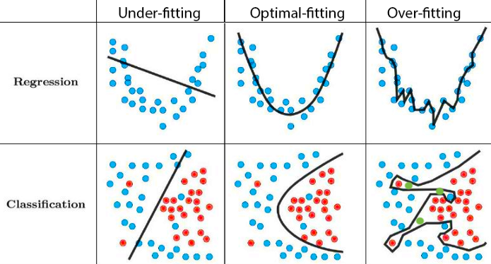

Data Splitting and K-Nearest Neighbors
MATH/COSC 3570 Introduction to Data Science
initial_split() in 

K-Nearest Neighbors (KNN) Classifier
KNN classification uses majority voting:
Look for the most popular class label among its neighbors.

When predicting at \(x = (x_1, x_2) = (8, 6)\),
\[\begin{align} \hat{\pi}_{3Blue}(x = (8, 6)) &= \hat{P}(Y = \text{Blue} \mid x = (8, 6))\\ &= \frac{2}{3} \end{align}\]
\[\begin{align} \hat{\pi}_{3Orange}(x = (8, 6)) &= \hat{P}(Y = \text{Orange} \mid x = (8, 6))\\ &= \frac{1}{3} \end{align}\]
KNN Decision Boundary
Blue grid indicates the region in which a test response is assigned to the blue class.
We don’t know the true boundary (the true classification rule)!.

KNN Training 

-
Step 1: Create recipe:
recipes::recipe()
Standardize predictors before doing KNN!
KNN Training 

-
Step 2: Specify Model:
parsnip::nearest_neighbor()
KNN Training 

-
Step 3: Fitting by creating workflow:
workflows::workflow()
(knn_fit <- workflows::workflow() |>
add_recipe(knn_recipe) |>
add_model(knn_mdl) |>
fit(data = df_trn))══ Workflow [trained] ══════════════════════════════════════════════════════════
Preprocessor: Recipe
Model: nearest_neighbor()
── Preprocessor ────────────────────────────────────────────────────────────────
1 Recipe Step
• step_normalize()
── Model ───────────────────────────────────────────────────────────────────────
Call:
kknn::train.kknn(formula = ..y ~ ., data = data, ks = min_rows(3, data, 5))
Type of response variable: nominal
Minimal misclassification: 0.217
Best kernel: optimal
Best k: 3Which K Should We Use?
\(K\)-nearest neighbors has no model parameters, but a tuning parameter \(K\).
This is a parameter which determines how the model is trained, not a parameter that is learned through training.


Python Code
import numpy as np
import pandas as pd
from sklearn.model_selection import train_test_split
from sklearn.neighbors import KNeighborsClassifier
## load data
body = pd.read_csv('./data/body.csv')
X = body[['HEIGHT', 'WAIST', 'BMI']]
y = body['GENDER']
X_trn, X_tst, y_trn, y_tst = train_test_split(X, y, test_size=0.2, random_state=2024)
## KNN training
neigh = KNeighborsClassifier(n_neighbors = 3)
X_trn = np.array(X_trn)
X_tst = np.array(X_tst)
neigh.fit(X_trn, y_trn)
## KNN prediction
y_pred = neigh.predict(X_tst)
from sklearn.metrics import confusion_matrix
confusion_matrix(y_tst, y_pred)